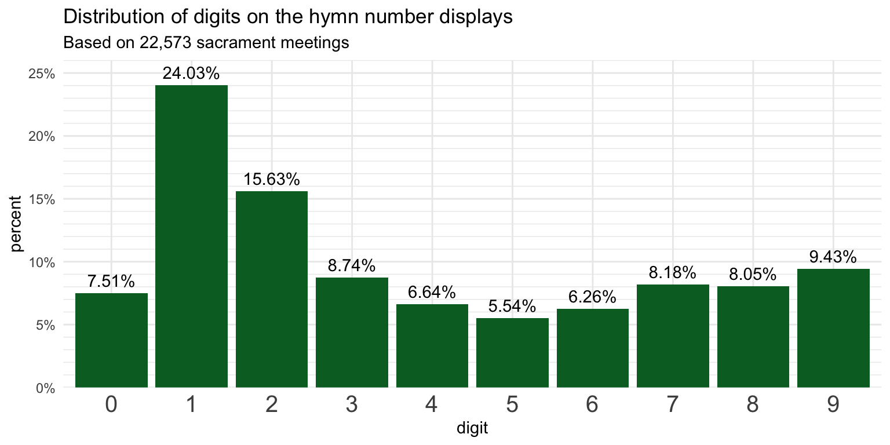

| digit | percent |
|---|---|
| 0 | 7.51% |
| 1 | 24.03% |
| 2 | 15.63% |
| 3 | 8.74% |
| 4 | 6.64% |
| 5 | 5.54% |
| 6 | 6.26% |
| 7 | 8.18% |
| 8 | 8.05% |
| 9 | 9.43% |
How many of each card shhould a ward have?
frequency
I’ve never had a calling where I was the one to put the cards on the display to show the hymn numbers. I also have no idea how many of each card is in a pack you get from Distribution. But, with the data I have, I can now provide some recommendations on how many of each digit a pack of cards has because have a pretty good idea of how many cards wards have had to use. So, let’s take a look at what we can learn. This post is based on data from 22,573 wards prior to June 2 when the new hymns were released since those 1000s throw everything off!
Number of digits on display
First, let’s take a look at the distribution of numbers across all the hymns in these sacrament meetings. This table shows what percentage of the cards displayed belonged to each number.
It shouldn’t come as too much of a surprise that the most common digit is 1. After all, the sacrament hymns all include at least one of them. I guess what’s surprising is just how much more common it is. It’s almost five times as common as 5 for some reason. We can plot these numbers. Here’s a plot to show these visually, which highlights the difference between them. Interestingly, the numbers 7–9 are slightly more common, probably because they’re used in the sacrament hymns which are hymns 169–196.

Which digits are most common?
So now what we can do is rather than look at all the data at once, we could look at each sacrament meeting individually. If a quarter of the cards used are 1s, and the most number of cards used on a typical sacrament meeting is twelve (four hymns, each with three digits), then about three of them are predicted to be 1s. Let’s see what the data actually shows though.
First off, the following plot shows the distribution how many cards are used each week. About 37% of meetings have nine digits on display. You’d see this if you didn’t sing an intermediate hymn and all three hymns that were sung were hymn 100–341. Another 19% have eight digits, which would mean one of the three hymns is between 11 and 99. Just a few wards only displayed five digits, which happens when the opening and closing hymn are between 1 and 9 and a typical sacrament hymn.
The plot above shows that, once in a very great while, you might see a sacrament meeting with only four cards used. This happened twice in my dataset. Both from the same ward in American Fork in March 2021. On one week, they sang
Going back to the individual digits, we can now go back and see how many of each are on display each week in a ward. I looked through all the sacrament meetings I have data from, and counted up how many of each digit was on display. I then took the average across all meetings. Those averages are displayed in this plot below. I know it’s nonsensical to think of 2.2 cards, but these are averages after all.
How many of each digit should come in a pack?
However, this plot is the same as the one above that showed the proportion of numbers on display across all meetings. So, let’s make it more useful. What if we consider a different question. How many copies of each digit should come in a standard pack distributed by the church? You probably don’t need twelve of each number because you’re never going to sing hymn 111 four times. But you want more than what the numbers in the above plot show, because it means half the time you won’t have enough.
What I’ve done is looked at how many copies of each digit are needed to account for 95% of sacrament meetings. Those numbers are displayed below. What this plot shows is that if you have four 1s and 2s, three 0s, 3s, 7s, and 9s, and two 4s, 5s, 6s, and 8s, you would have enough cards 95% of the time. That means it’s only about every two years that you’d run out of cards.
Howevever, once every two years is still more often that you’d want. Perhaps what we’d want is to be good 99% of the time. The plot below shows those numbers. This time, you’d need five 1s and 2s, four 3s, and three of everything else. That would ensure you’re good to go almost all the time and maybe once every five years would you run out.
Perhaps that’s sufficient. But maybe not. For the sake of curiosity, how many cards would it take to cover all the sacrament meetings I have data for? The plot below shows those numbers. You’d need a whopping eight 1s, seven 2s, six each of 3s, 6s, and 7s, and five of everything else.
For the 1s, yes, there was a sacrament meeting that used eight of them. It was a ward in Maryland in 2017 and they sang
You’d in theory need
Two sacrament meetings used seven 2s. This was mostly done by singing multiple hymns in the 220-229 range. But the most possible I suppose would be eight, if you sang the rather unusual hymn
The other digits